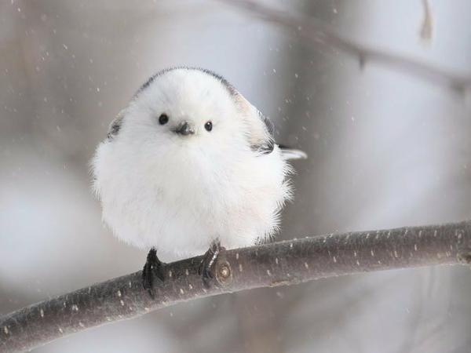

"Happy Birds' is known for its high iron content and much lower cholesterol than other breeds, and sells at a much higher price than other varieties, say experts. Kadaknath or Kali Masi (fowl with black flesh) is unique breed of chicken that is completely black in colour. Apart from its meat,it's bones and most organs are also black. It's egg are also in black. Its black colour stems from deposition of melanin pigment. It contains 25–27% of protein in comparison with other breeds of chicken that contain 18% Protein.It is known that Kohli and members of the Indian cric
